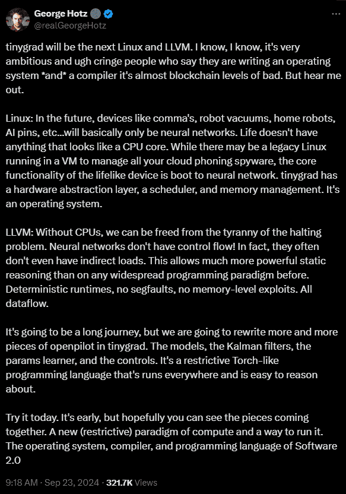

EVOLUTION.HTML
[1938-1945]
The enigma machine is a machine that looks like a typewriter, used by nazi Germany during World War 2 to encrypt and decrypt messages sent by them. They sent the enigma machines to all the members of the Axis force(Nazi Germany, Italy, and Japan), and all the messages sent by them were encrypted by the enigma machine. It had multiple "rotor" configurations which had to be set before encrypting a message. The machine used to decrypt a message needs to have the same configuration as the machine used to encrypt the message. Hence, any breakthrough done by the Allied forces(Britain, the US, and the Soviet Union) on one day cannot be carried on to the next day.
The British government hired mathematicians to work on this problem at Bletchley Park. Messages received through radio were translated to enigma from Morse code and handed out to mathematicians who had 24 hours to crack the configuration before it changed. Alan Turing was one of the mathematicians working on this problem. While others(cryptographers, linguists, mathematicians, etc...) were trying to solve by pen and paper, Alan built "The Bombe": an electro-mechanical device that could find the configuration of any message within 20 minutes.
It has been estimated that the Bombe shortened the war by 2-4 years and saved millions of lives. After the war, Alan Turing was forced to take hormone therapy, when the government found out that he was gay. Later, Alan committed suicide by eating an apple poisoned with cyanide in 1954, at the age of 41.
SIDE_NOTE: "The Imitation Game" starring Benedict Cumberbatch is a good watch if you don't mind a little drama.
FUN FACT: Benedict is a 17th cousin of Alan.
[1945-1965]
A decade before this incident, John Von Neumann, a mathematician and physicist, took inspiration from the bombe and generalized it. He designed a machine that could solve any computational task by reprogramming the machine.
SIDE_NOTE: I won't be entering the "language" rabbit hole. If you are interested watch this.
He called it the "Von Neumann architecture". This architecture has 3 main components: memory, CPU, and input/output devices. Memory holds data/instruction. CPU reads the data/instruction from memory, processes it, and writes the result back. This architecture is very successful as it is very generic and our phones, computers, etc... use this architecture.
One of the issues faced by John was that the computers were huge and took an entire room, used a lot of electricity, and was a pain in the ass to debug. Almost a decade later, Gordon E Moore, one of the co-founders of Intel, stated the famous Moore's law: "Number of transistors on an integrated circuit roughly doubles every year", or in other words, the size of a computer is going to reduce by half every year. This law has slowed down significantly in recent years due to physical limits.
[1975-2010]
The invention of the AC by Nikola Tesla allowed electricity to travel far distances and the reduced size of computers consumed less electricity every year. This meant that an average household could afford a computer, which in turn gave birth to the software market. Transistors became smaller, hardware circuits such as branch prediction, out-of-order execution, etc., were designed, storage devices became smaller, and the world accelerated.
Hardware accelerators(GPUs) became part of an average computer due to video games and graphical user interfaces requiring more parallel processing than what the CPU could offer. GPUs have more cores than CPUs, but each core on a GPU has to execute the same instruction. Therefore, branching is very expensive on a GPU, but tasks such as rasterization, matrix multiplication, etc... do not use branching, hence GPUs excel at these tasks.
[2015-NOW]
The landscape of hardware is changing. CPUs have fancy circuitry such as branch prediction, caching, privilege, etc... Deep learning tasks do not need all this circuitry. If we have circuitry to load matrices from memory, multiply them, apply non-linear functions, and store them back to memory(each has its own CISC instruction) and we have libraries such as pytorch, tensorflow, tinygrad, etc... to compile models to CISC instructions, we do not need fancy circuitry, OS, driver, etc... and we can directly run models on bare metal.

[NOW-FUTURE]
A lot of AI is about finding minima of a function, with constraints. People noticed that nature also likes to find minima. If you place a ball in a bowl, the ball will find the minimum of that bowl automatically due to gravity. So, can we design machines that use nature to find minima of more complex functions? These machines are called thermodynamic computers. Here is a blog which solves a problem using the described method.
Beff Jezos pitching his thermodynamic computer startup: